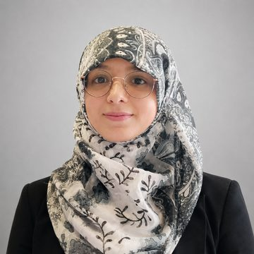

Research / SYNTERA Health
AI for Health
Why it matters
Health systems generate more data than clinicians can read. AI can turn images, signals and records into earlier, fairer and more personal care, provided it is trustworthy and fits clinical practice.
Key challenges
- Data quality, bias and missing context in health records
- Explaining model output to clinicians and patients
- Privacy, consent and ethical use of sensitive data
- Moving from prototype to everyday clinical workflow
Our approach
We combine machine learning, medical image and signal analysis, digital health and bibliometric methods, working with clinicians and health information researchers.
Team
Who works on this

Dr. Shahrzad Saremi
Founder · Director
 School of Science, Technology and Engineering, University of the Sunshine Coast
School of Science, Technology and Engineering, University of the Sunshine Coast
Dr. Rania Shibl
Co-Director · Cofounder
Faculty of Science and Engineering, Southern Cross University, Lismore
Mostafa Kamalpour
Senior Researcher · Sessional Academic
School of Information Systems, Faculty of Science, Queensland University of Technology
Dana Dermody
Cofounder · Senior Researcher
Institute of Health and Wellbeing, Federation UniversitySamia Mujahid
Researcher
 Department of Computer Science, National University of Computer and Emerging Sciences (FAST-NUCES), Chiniot-Faisalabad Campus
Department of Computer Science, National University of Computer and Emerging Sciences (FAST-NUCES), Chiniot-Faisalabad CampusSvetlana Kolos
Master's Student
Torrens University AustraliaShiva Jahanaray
Researcher
 Tafakor Pishro Asredade Parsian, Babol
Tafakor Pishro Asredade Parsian, BabolSepehr Amooeinejad
Researcher
School of Information Systems, Queensland University of Technology, Brisbane, QLD
Bisma Ali
Researcher
School of Electrical Engineering and Computer Science (SEECS), NUST IslamabadMalahat Mardani
Researcher
Babol Noshirvani University of Technology
Mounes Mardani
Researcher
Babol Noshirvani University of Technology